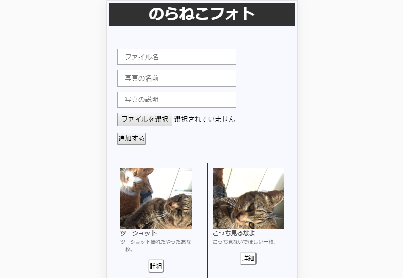
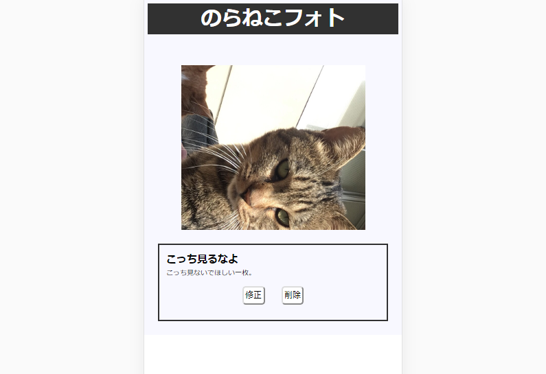

フォームから保存時に指定するファイル名、写真の名前、写真の簡単な説明を入力しファイルを選択する。

投稿を追加した後は写真の名前・説明を編集したり、削除したりすることができます。
なぜ作ったのか
- サーバーサイド言語がどのようなものかの基本を確認するため。
- 基本的なCRUD操作についての初歩的な内容に触れ、少しの理解を得ておきたかったため。
使用した言語等
- PHP
- MySQL
今後追加していく機能
- ソート機能